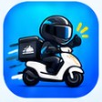

라이더짝꿍 V1.58.148
Android · 기존 앱 업데이트용 APK
APK 바로 다운로드배민 자동 수익 저장은 아직 보류(HOLD) 상태입니다.
버튼을 누르면 APK 다운로드를 요청합니다.
현재 비공개 시험 파일이므로 GitHub 로그인이 필요할 수 있습니다.
다운로드가 막히면 Chrome 또는 삼성 인터넷으로 열어주세요.

라이더짝꿍Android · 기존 앱 업데이트용 APK
APK 바로 다운로드배민 자동 수익 저장은 아직 보류(HOLD) 상태입니다.
버튼을 누르면 APK 다운로드를 요청합니다.
현재 비공개 시험 파일이므로 GitHub 로그인이 필요할 수 있습니다.
다운로드가 막히면 Chrome 또는 삼성 인터넷으로 열어주세요.
기존 라이더짝꿍을 삭제하거나 데이터를 초기화하지 마세요. V148은 실주행 검증 전 시험판이며, 설치 전 기존 수익기록을 백업하세요.